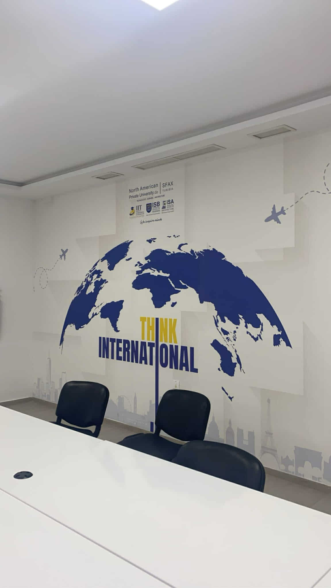
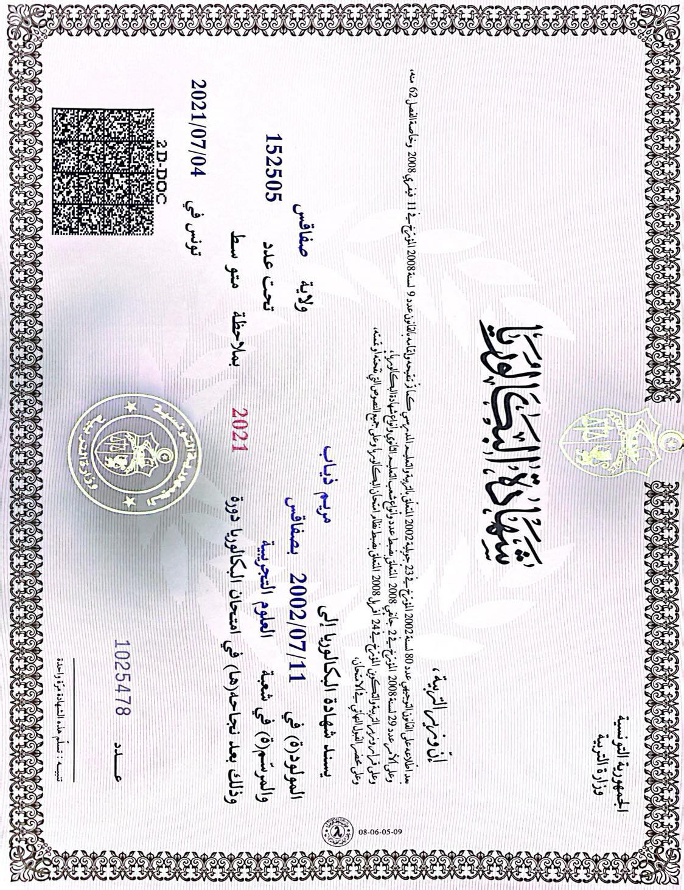

J'ai ensuite poursuivi mon parcours académique à LISIMS, où j'ai obtenu une licence en sciences de l'informatique, avec une spécialisation en Big Data et analyse de données.

En parallèle de mes études, je travaille comme développeuse chez Business Soft. Cette expérience me permet de mettre en pratique mes compétences techniques dans des projets concrets, tout en développant mon expertise dans le monde professionnel.
Actuellement, je suis étudiante à l'Institut International de Technologie (IIT) en première année d'ingénierie en génie informatique Cour professionnel.
J'ai ensuite poursuivi mon parcours académique à LISIMS, où j'ai obtenu une licence en sciences de l'informatique, avec une spécialisation en Big Data et analyse de données.
J'ai poursuivi mes études au lycée 25 Juillet 1957 à Sfax, où j'ai obtenu mon baccalauréat en sciences expérimentales en 2021.
